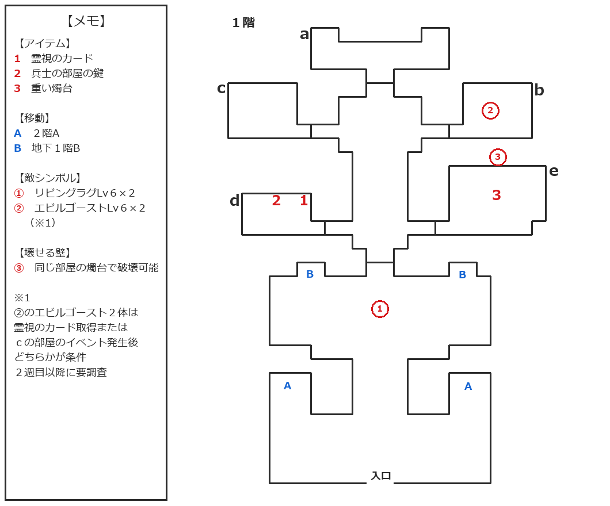
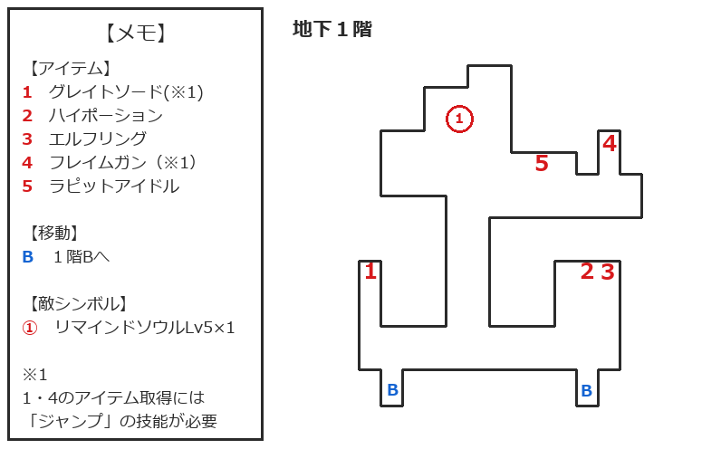

『Wizap! -ウィザップ 〜暗黒の王-』のプレイ日記8回目です。
前回は、エピソード4「幻の家」の攻略途中でいったん王国へ戻り、マクスターの麻痺を治療してレベル5に上げたところで終了しました。
今回は、屋敷へ戻って「幻の家」の探索を再開します。主人公はレベル5・役人、マクスターはレベル5・医師の状態から再開です。
今回から攻略マップを掲載
今回から、自作の攻略マップも使いながらプレイ日記を書いていきますね。掲載するマップはプレイしながら作っている途中版で、完成版は後日、攻略目次の攻略情報として追加する予定です。


地下1階は今回の進行には直接関係しませんが、前回までの探索内容をもとに1階とあわせて作成しました。1階マップの青いBと、地下1階マップの青いBが対応しています。
2階を阻む強い力と童話の本
屋敷へ戻り、まずは2階へ続く階段を確認しましたが、以前と同じく強い力に阻まれて進めませんでした。まだ1階に見落としがあるのでしょうか？
手がかりを探すため、bの部屋にある童話の本を改めて読んでみます。前回は1冊だけ童話の本があることしか確認していませんでしたが、今回は最後まで読むことができました。
本には、主から「ちゃんと杖は持ってきたのかね」と尋ねられたことが書かれており、その先は汚れていて読めないそうです。
前回、杖について書かれていた記憶がないのですが……気のせいでしょうか？
ほかに手がかりもないですし、杖を探してみましょうか。
とはいえ、杖なんてどこにあるのか……。そう思いながらbの部屋を出ると、また声が聞こえてきました。今度は左側の部屋からのようです。
確認してみると、これまで鍵がかかっていたcの部屋へ入れるようになっていました。童話の本を読んだことが条件だったのでしょうか。
cの部屋に入ると、何か不安な気配が漂っているとのこと。しかし、ここで杖を探しても見つかりません。仕方ないので、別の場所も探してみましょう。
理由は分かりませんが、cの部屋だけでなくdの部屋の鍵も開いていました。cの部屋が開いた時に、こちらも一緒に開いたのでしょうか？
霊視のカードと残留思念
dの部屋の右上にある本棚を調べると、1冊だけ妙な本が置かれていました。題名は「残留思念とその視覚化」。さらに本棚から「霊視のカード」を入手しました。
霊視のカードは通常のアイテム欄には表示されていませんね。このエピソード限定のキーアイテムでしょうか？
カードを入手したあと、cの部屋へ戻ると、bの部屋で見たものと似た光景が始まりました。
鎧の兵士は、部屋にいた男性に、ダークロードに逆らうのかと問い詰めます。さらに、英雄として城へ入り王子の命を狙わなければ、娘の命はないと脅していました。
兵士が出て行ったあと、男性はアリシアさんに、娘を連れて逃げるよう伝えます。自分は屋敷に火をつけ、邪悪の門も含めてすべてを灰にし、国王へすべてを話すつもりのようです。
そして、屋敷の鍵を暖炉の中に隠しておくと言い残し、男性も部屋を出ました。
その直後、何者かがアリシアさんに襲いかかったところで、過去の光景は途切れました。
メッセージには「残留思念だったのでしょうか？」と表示されます。やはり、前回から見ている光景は屋敷に残った過去の記憶なのでしょうか。
アリシアさんを襲った存在は人間ではなさそうでしたが、あれがダークロードと呼ばれている存在なのでしょうか？
兵士の部屋の鍵と強い念
残留思念を見たあと、dの部屋の暖炉を調べると「兵士の部屋の鍵」を入手できました。先ほどの男性が話していた鍵でしょう。
鍵を使うと、eの部屋へ入れるようになりました。
部屋へ入ると、「この部屋には何か強い念が作用しているようです」と表示されます。しかし、それ以外には何も見つかりません。また別のアイテムが必要なのでしょうか？
エビルゴースト2体と再び麻痺
eの部屋の手がかりを求めて屋敷内を探索していると、bの部屋でレベル6のエビルゴースト2体と戦闘になりました。
エビルゴーストは「フレイム・ランス」の魔法と、麻痺を与える近接攻撃を使ってきます。戦闘後は1360の経験値を獲得しました。
この敵が出現したのは、霊視のカードを入手し、cの部屋のイベントを見たあとのことです。どちらが出現条件なのかはまだ分からないため、2周目以降に確認する予定です。
そして、今回もマクスター君が麻痺状態に……。戦闘ではあまり当てにしていないので構いませんが、移動が遅くなるのは面倒ですね。
戦闘でHPも減っていますし、ちょうどいい機会なので、エルフリングの効果を試してみましょうか。
しばらく歩いてみると、非戦闘時の移動でHPが回復しました。これで、エルフリングにはドワーフリングと同じく、非戦闘時の移動でHPが回復する効果があると確認できました。装備によるステータス補正以外は、ドワーフリングと同じと考えてよいのでしょうか？
すぐに王国へ戻れる状況で消費アイテムを使うのはもったいないので、再びエルデスト寺院へ向かいます。
エルデスト寺院で再び麻痺を治療
寺院では、状態異常だけでなく減っているHPの回復分も治療費に含まれるようです。麻痺とHP回復をあわせると45GOLD、麻痺だけなら25GOLDでした。
ただし、治療には25GOLDが必要と言われたのに、所持金は10GOLDしかありません。治してもらえないかと思いましたが、「放っておけない」と治療してくれました。ありがとう、おじいちゃん……
でも、これなら所持金が0GOLDでも治してくれるのでは……？ そんな考えが頭をよぎりましたが、できるだけ治療費は払えるようにしておきたいですね。
重い燭台で壁を壊す
麻痺を治療して屋敷へ戻り、eの部屋をもう一度調べます。
部屋の中央上側を調べると、壁の中が空洞になっているようです。ハンマーのようなものがあれば、壁を壊して中を調べられそうですが……ハンマーなんて、どこかにありましたっけ？
さらに部屋を探索すると、同じ部屋にある重い燭台をハンマー代わりにできるとのこと。
……いや、そんなことある？
重い燭台で壁を壊すと、中にあったオーブまで砕けてしまいました。それと同時に、部屋に存在していた強い念も消えたようです。
ところが、部屋から出ようとすると扉に鍵がかかっています。もう一度室内を調べ、重い燭台を机の上へ戻すと、扉の鍵が開きました。
幻の家2階へ
オーブを壊したあと、2階へ進むのを阻んでいた強い力が消え、先へ進めるようになっていました。
ここまでやって、ようやく2階への進行が可能になるとは……。このエピソードも、まだ先が長そうですね。
今回はここまでにして、次回は2階の探索から始めましょうか。
今回のまとめ
今回は、童話の本を読み直したあと、これまで鍵がかかっていたcとdの部屋へ入れるようになっていました。
dの部屋では「霊視のカード」を入手し、cの部屋で残留思念と思われる過去の光景を確認しました。さらに、暖炉に隠されていた「兵士の部屋の鍵」を見つけ、eの部屋へ進みました。
探索中に現れたエビルゴーストとの戦闘後には、エルフリングに非戦闘時の移動でHPが回復する効果があることも確認できました。
その後、eの部屋にあった重い燭台で壁とオーブを壊し、2階へ進むのを阻んでいた強い力が消えました。ようやく2階へ進めるようになったところで、今回は終了です。
現在のステータス
※力強さから守護までは、「装備品による補正後/元の値」の形で表記しています。
- レベル：5
- 職業：役人
- 最大HP / 最大MP：95 / 212
- 力強さ：16/16
- 防衛力：15/15
- 知性：10/8
- 器用さ：9/5
- 素早さ：0/3
- 生命力：3/3
- 守護：7/7
- 攻撃：28
- 防御：10
- 武器：グレイトソード
- 防具：レザースーツ、インナープレート、スケイルメイル
- 特殊：エルフリング、ドワーフリング、ラビットアイドル
- 技能：ジャンプ、スイミング、アンチフリーズ
次回やること
次回は、エピソード4「幻の家」の2階を探索し、1階で見た残留思念や屋敷の謎がどうつながるのか確認していきましょうか。
← 前回：7回目 エピソード4「幻の家」攻略開始と屋敷1階の探索
次回は作成後に追加予定です。
【作品について】
本ページで扱う作品名・各種権利は、各権利者に帰属します。
『Wizap! -ウィザップ 〜暗黒の王-』（スーパーファミコン）
©1994 ASCII CORPORATION
最終更新日：2026/08/12